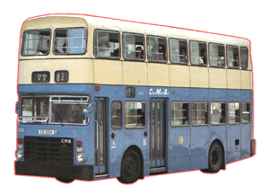

 |
車隊編號 Model 引擎 Engine 容積 Engine Capacity 波箱 Gearbox 車身 Body Build 體積 Volume 載客量 Passenger 服役年份 Year |
: DS (1 - 30) : Gardner 6LXB (180bhp) : 10.45 liters : Voith DIWA 851 (3-Speed Automatic) : Walter Alexander (Type CB) : 9728L X 2500W X 4470H(mm) : U60 L42 S8 : 1980 - 1999 |
三十部 Dennis Jubilant [喝采型] 由中巴引入，Dennis 車廠為了香港所研製的前置引擎巴士，由外貌、性能、機械配撘都和 [勝利二型] 非常相似。最初被調到 41 線來測試其性能，成功後便即時被派到柴灣，接受它來港的其中一項艱鉅的任務，行走柴灣至灣仔碼頭 8 號線和柴灣至北角碼頭的 82 號線服務，因為這兩條都是當年東區主要路線，所以服務時間相當長，由朝四時至晚二時，足足行走超過二十二小時，而且要經過 1:10 的柴灣道(長命斜)，更見吃力，真的身子差一點都不能承受得起。後來直到南區路線失守，DS 才退出 8 號線，部份被編為後備車，但它仍然充當 82 線的主力，到了 99 年才全部退下火線，由新型空調巴士所取代。